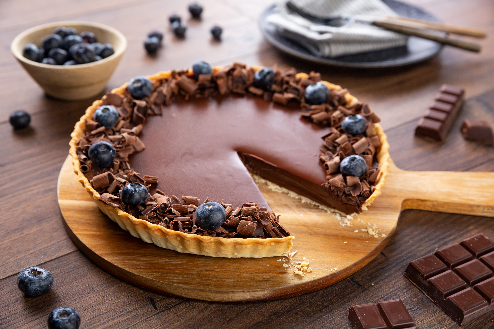

¿Por qué este blog?
- Recetas probadas y aprobadas por mi familia
- Ingredientes fáciles de encontrar
- Instrucciones paso a paso claras
- Consejos útiles para principiantes
¡Hola! Soy un apasionado de la cocina casera. En este blog comparto recetas fáciles, deliciosas y probadas que puedes hacer en casa. Desde platos tradicionales hasta creaciones modernas, encontrarás algo para todos los gustos.
Una tarta de chocolate suave y cremosa que se derrite en la boca. Perfecta para ocasiones especiales o para darte un capricho.
Aprende a hacer pan casero con este video tutorial paso a paso.
Escucha consejos y trucos de cocina en nuestro podcast semanal.